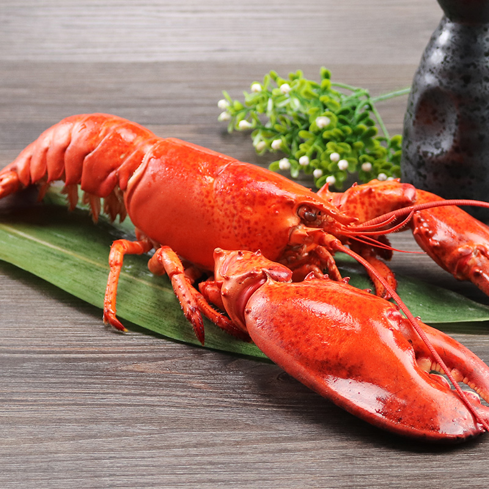

网站首页
关于我们
基地展示
服务范围
新闻资讯
配送产品
配送流程
联系我们
关于我们
about us
当前位置：
首页
基地展示
礼乐蔬菜基地
Engineering design
台山海鲜采购
Ecological design
江海区养鸡场
Ecological restoration
宅梧蔬菜基地
green maintenance management
NURSERY
/
项目案例
礼乐蔬菜基地
台山海鲜采购
江海区养鸡场
宅梧蔬菜基地
广东绿色菜心 新鲜青菜花
菜心品质柔嫩，味甘苦，营养丰富。每千克
可食用部分含蛋白质13～16克、脂肪...
＋
苦菊 西餐沙拉菜新鲜蔬菜
苦菜中含有蒲公英甾醇、胆碱等成分，对金
黄色葡萄球菌耐药菌株、溶血性链球...
＋
精品荷兰黄瓜 水果小黄瓜新
黄瓜中含有一种维生素C分解酶，而日常生
活中，黄瓜生吃的比较多，这个时候...
＋
菠菜新鲜绿色无公害蔬菜
菠菜有营养模范生之称，它富含类胡萝卜
素、维生素C、维生素K、矿物质（钙质...
＋

波士顿龙虾 野生龙虾新鲜生
波士顿龙虾其实叫缅因龙虾，也不产于波士
顿。这种大钳龙虾原称北美洲龙虾，...
＋
超大号去头甜虾北极虾刺身
【日本美食】甜虾是北海道的名产之一，甜
虾刺身是不可错过的北海道美食。广...
＋
北极贝海鲜水产鲜活
北极贝本性寒凉，最好在食用时避免与一些
寒凉的食物共同食用，比如空心菜、...
＋
帝王蟹2.8-3.2斤 海鲜大螃蟹
帝王蟹又名石蟹或岩蟹，即石蟹科的甲壳
类，不是真正的螃蟹，它们主要分布在...
＋
关于我们
基地展示
服务范围
新闻资讯
配送产品
配送流程
联系我们
Copyright © 2015-2016 www.yuming.com 公司名称 版权所有
Power by DedeCms
地址/Add：广东省广州市天河区员村三横路1号 电话/Tel：400-0000-000
技术支持：MR.yang
我是逗恩1
我是逗恩2
我是逗恩3
逗恩无处不在


 逗恩无处不在
逗恩无处不在